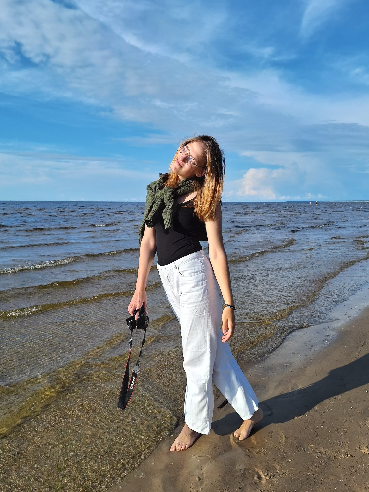

“Viļņu izmisums”, 2025

Fotogrāfija man nav tikai attēls. Tā ir satikšanās. Ar sevi. Ar otru. Ar gaismu. Es strādāju ar kustību, ar elpu, ar brīžiem, kas nav iestudēti. Man svarīgi, lai tu fotosesijā justos droši, mierīgi un patiesi. Lai vari atlaist spriedzi un ļaut ķermenim runāt.
Manā radošajā praksē liela daļa ir arī pašportreti — tie ir veids, kā es pati mācos būt ievainojama un brīva. Tas, ko es piedāvāju tev, ir tas, ko es meklēju arī sev. Mani darbi ir eksponēti grupu izstādēs Liepājā, galerijā “Romas dārzs”, un mana mākslinieciskā interese saistās ar sievišķību, ķermeni un attiecībām ar dabu.
Es ticu, ka fotosesija var būt vairāk nekā skaistas bildes.
Tā var būt maza atgriešanās pie sevis.
Ja sajūti, ka šī pieredze uzrunā — uzraksti man.
Mans Instagram: @_ksema_
“Viļņu izmisums”, 2025